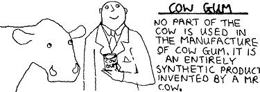

Monday, March the 2nd, 2009
back to: title, date or indexes
According to the old adage, “the best banisters are the sturdiest banisters”. There is a great deal of wisdom in this simple phrase, as many unsteady persons who may otherwise have toppled to their deaths can attest. But it is a saying which has been wilfully ignored by trendy banistermaker Tim Snap, who is peddling his latest design, a banister rail made of crepe paper thickened with cow gum. We sent a roving Hooting Yard reporter to interview Mr Snap.
Reporter : I am astonished to see you leaning insouciantly against your crepe paper and cow gum banisters, Tim, given they are all that stands between you and a yawning stairwell down which you could plunge to your death.
Snap : You should add, for the benefit of your readers, that I am leaning my full weight against the banisters.
Reporter : If you don't mind me saying so, Tim, you are quite a chubby banistermaker, so there must be quite a bit of weight for your banisters to support.
Snap : That is indeed so.
Reporter : If I were to give you a shove, in a joshing sort of manner, as between a couple of pals, would your banister withstand the added pressure suddenly put upon it?
Snap : I certainly hope so.
Reporter : Let's test it shall we?
Snap : Well, before you do, please note that this new banister rail, like all my banisters, is primarily decorative.
Reporter : Are you trying to wheedle your way out of my shoving test?
Snap : Quite frankly, yes.
Reporter : I think that tells us all we need to know.
There is, you see, a point to those old adages, and a reason why they have survived. They express truths, both big and little truths. So when next you come upon a snaggle-toothed peasant sitting on a fence chewing a piece of straw and mumbling a litany of folk wisdom, do not dismiss what they say. Sometimes their sayings may seem to be blithering nonsense, as for example “A pig on the lane can cause you a sprain” or “When you see a door ajar, tug your forelock to the Master up at the Big House”. If you reflect for long enough even upon the most ludicrous-seeming utterance, you will eventually bow to its wisdom. And you will be much less likely to fork over your cash to a pretentious git like Tim Snap who, our reporter revealed, was supported over that vertiginous stairwell not by his crepe paper and cow gum banisters, but by a system of invisible winches and pulleys. Let that be a lesson to you.
You will almost certainly want to know more about cow gum. The great Tim Hunkin tells us this:

and you should refer to his majestic Rudiments Of Wisdom Encyclopaedia for much else besides.
Hooting Yard on the Air, March the 12th, 2009 : “Pact And Retort” (starts around 05:40)
Hooting Yard on the Air, March the 12th, 2009 : “Pact And Retort” (starts around 07:53)